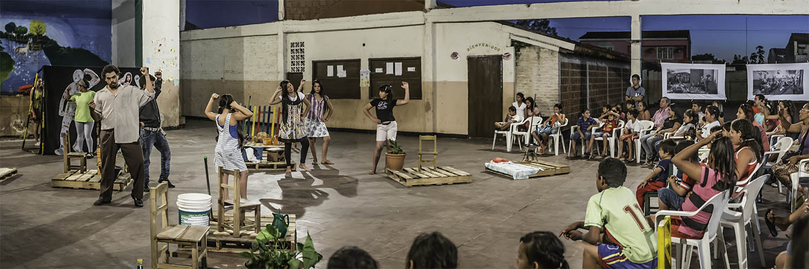
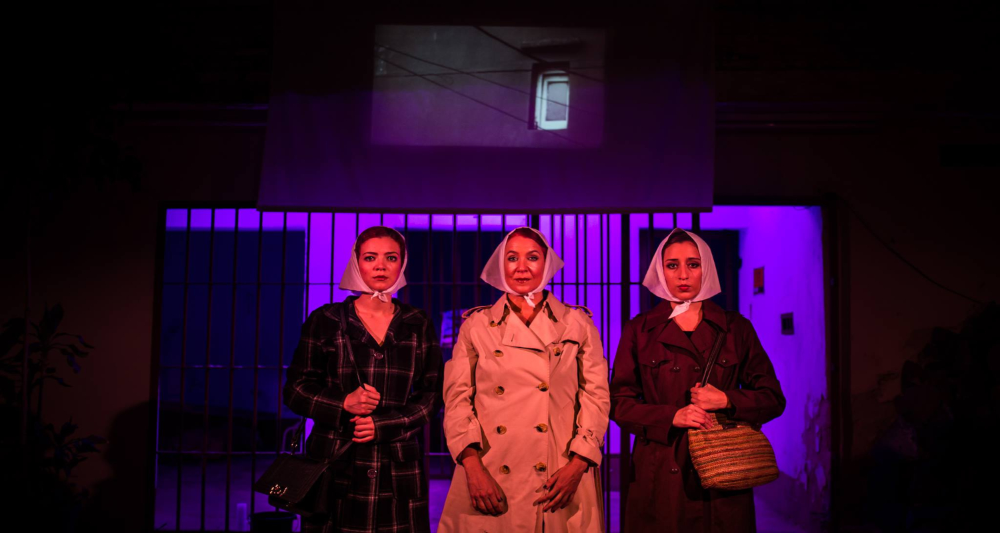
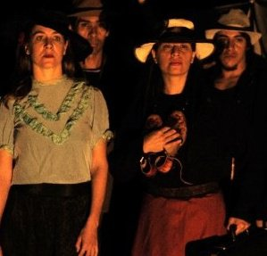
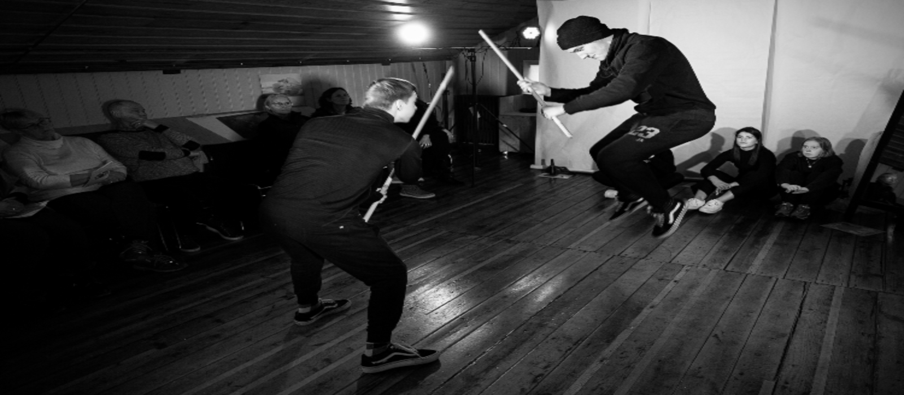
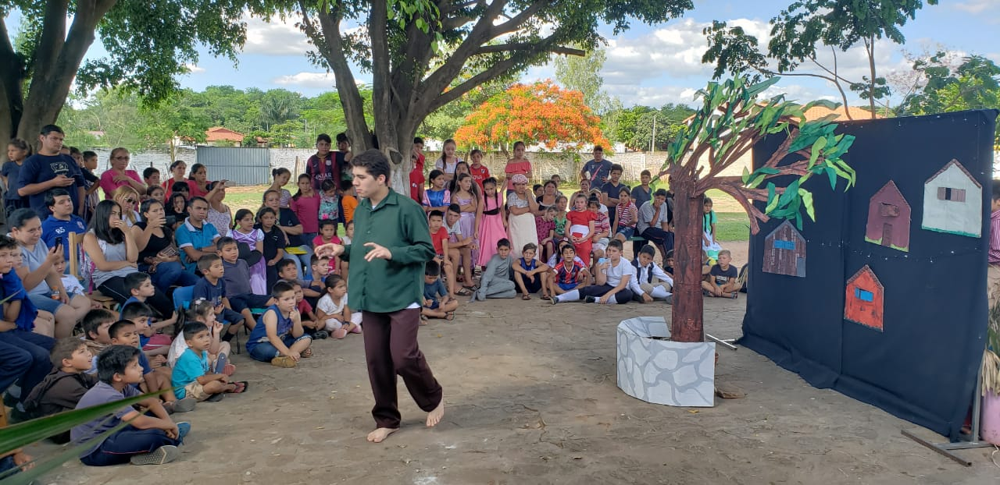
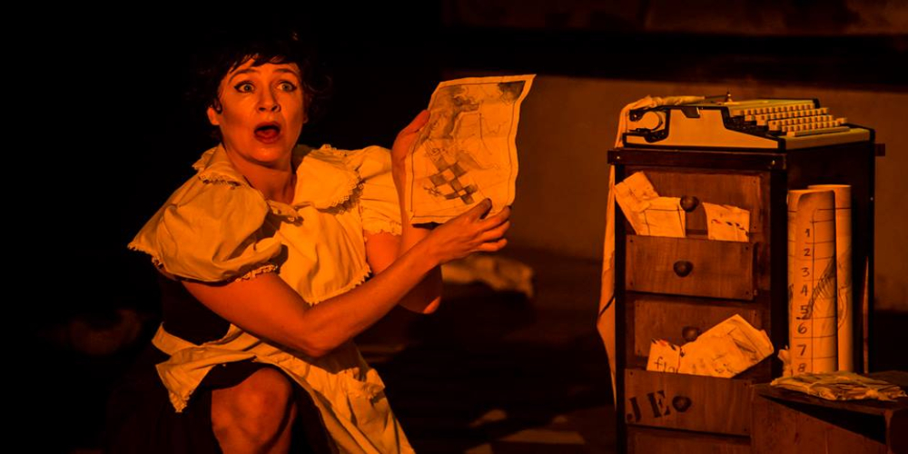

Community Arts & Processes
Trained as a community psychologist and director of psychodrama. By trade social researcher, actress, puppeteer and writer. Postgraduate in Social Services Management - Complutense University of Madrid and Post Bachelor Program in Relation and Networks - University of Tromso.
Since 2004 she designs and leads social projects where she combines art, creativity and strengthening community ties, together with non-governmental organizations and social movements.
Between 2005 and 2012 he was part of the spontaneous theater company Kusuví, directed by Lirio Obando, with whom he made interventions in the streets, squares and public schools addressing social problems with this participatory device.

Since 2009, it has been developing street theater interventions and torture sites during the dictatorship “Arte por la memoria” together with Servicio Paz y Justicia Paraguay (SERPAJ PY). 
Between 2008 and 2014 she was part of the Hara Teatro company, directed by Wal Mayans, with whom she carried out 7 years of anthropological theater laboratory and participated as an actress in tours with plays in Curitiba, Fortaleza (Brazil), Córdoba (Argentina ), Fara Sabina (Italy) and Shanghai (China).
Since 2009 and currently he is part of the Kunu´u Tïteres company, together with Carola Mazzotti. In 2015 he premiered his first Solo “Bellmerides” in Berlin with the direction of Marisol Salinas (El Salvador) and the artistic assistance of Birgitt Asshoff (Berlin). Since May 2019 she resides in Iceland where she has performed Lambe Lambe Theater shows and a physical theater workshop for high school students called “Stories with bodies”.
Some Jobs between 2015 and 2018:
Art Specialist in the Violence Prevention and Social Insertion Project. Executed in the San Carlos neighborhood of the city of Luque with financing from the IDB and executed by the CIRD Foundation. From March to December 2018.

Unipersonal directed by Raquel Martínez "Remedios Varo, a surrealist soul" in the Spanish-American theater cycle of the Spanish cultural center Juan de Salazar. December 2018.
Bird Girl. A tribute to Alejandra Pizarnik ”, a work that combines theater and manipulation of objects. Co-production Kunu´u Puppets and Miniature Theater Paraguay. It premiered in September and toured Posadas y Resistencia - Argentina in 2016. In 2017 it was presented at the Centro Cultural Paraguayo Americano (CCPA).
LINKS:

National tour (Asunción, Encarnación, Pilar, Ciudad del Este) and international (Buenos Aires / Curitiba) with the work «Broken Doll», about social mandates and their effects on bodies. Together with the artists Ana Brisa Caballero and Marisol Salinas. From June to November 2015.
Edited storybooks:
Link to Facebook Bird Girl Title of the work: Bird Girl